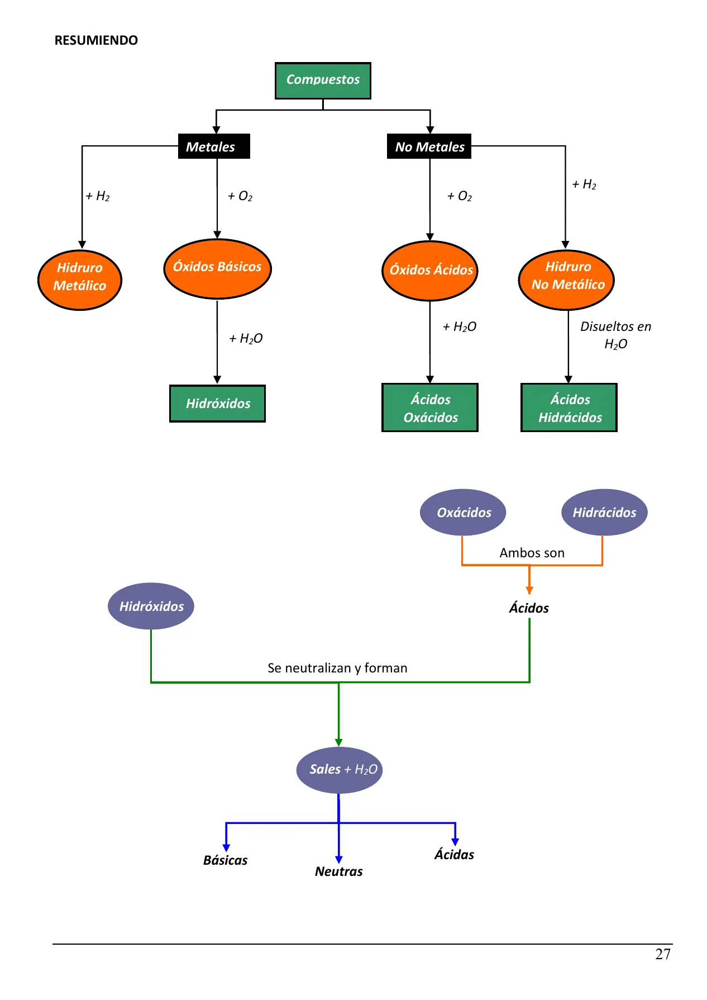
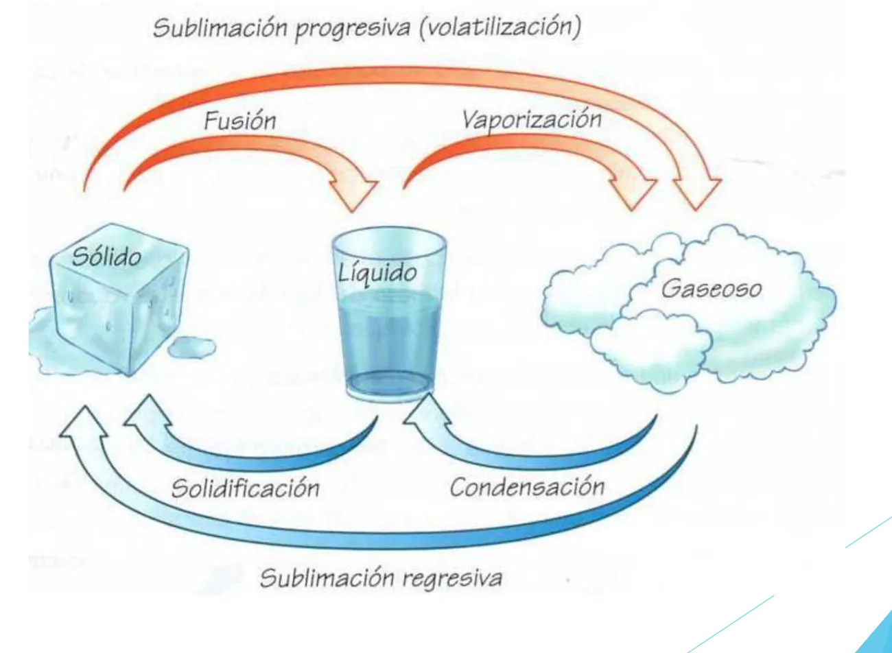
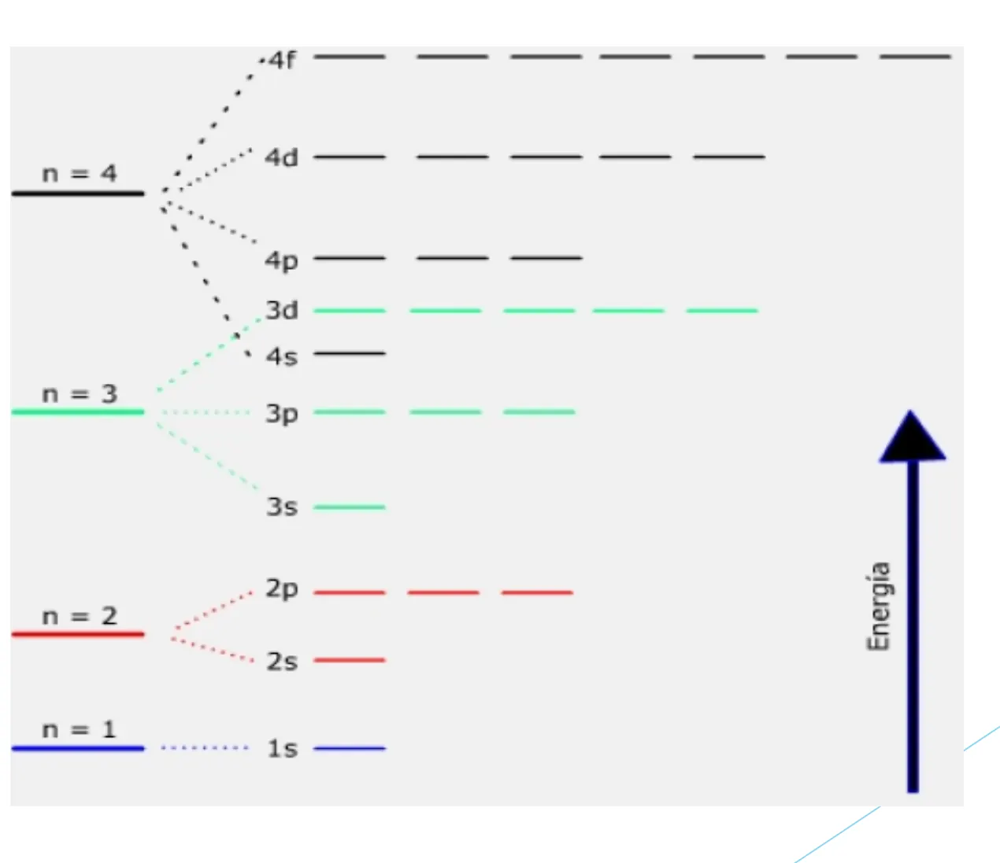
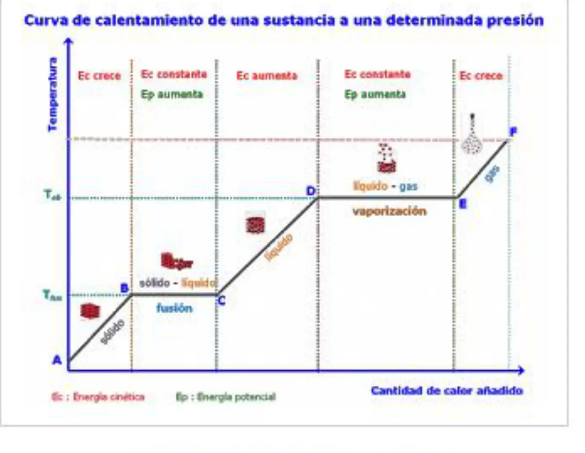
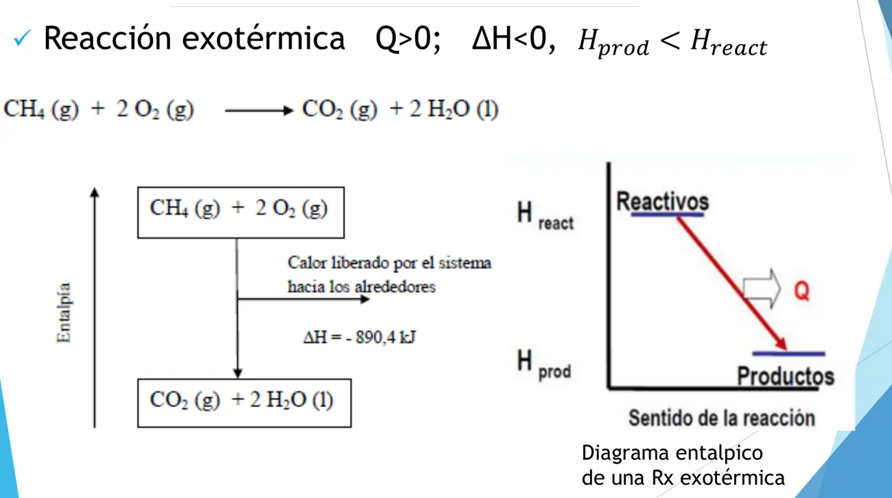
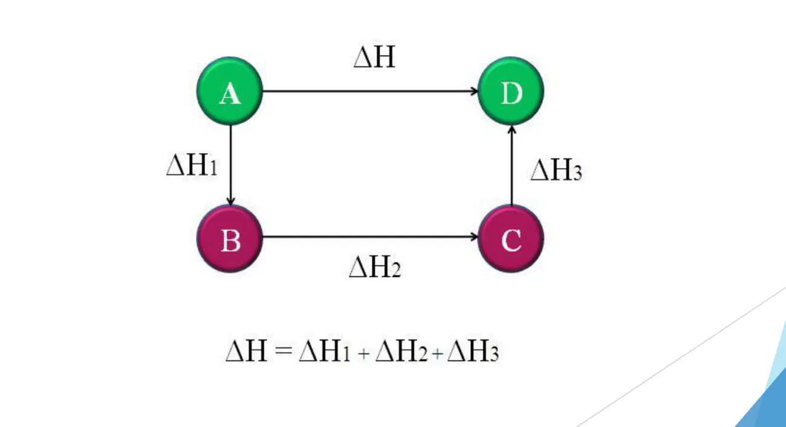
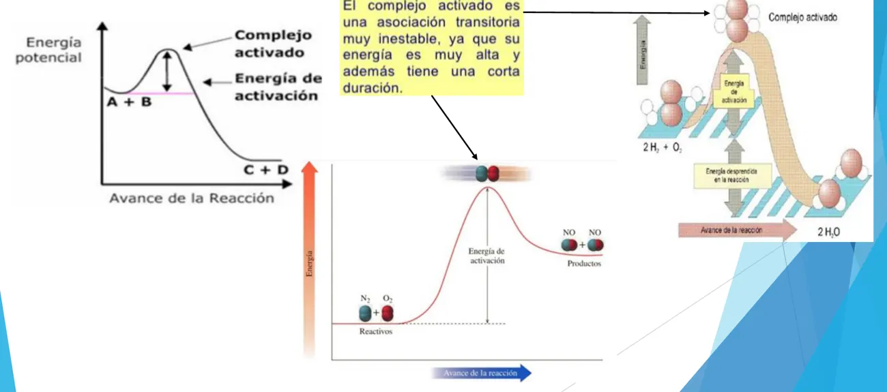
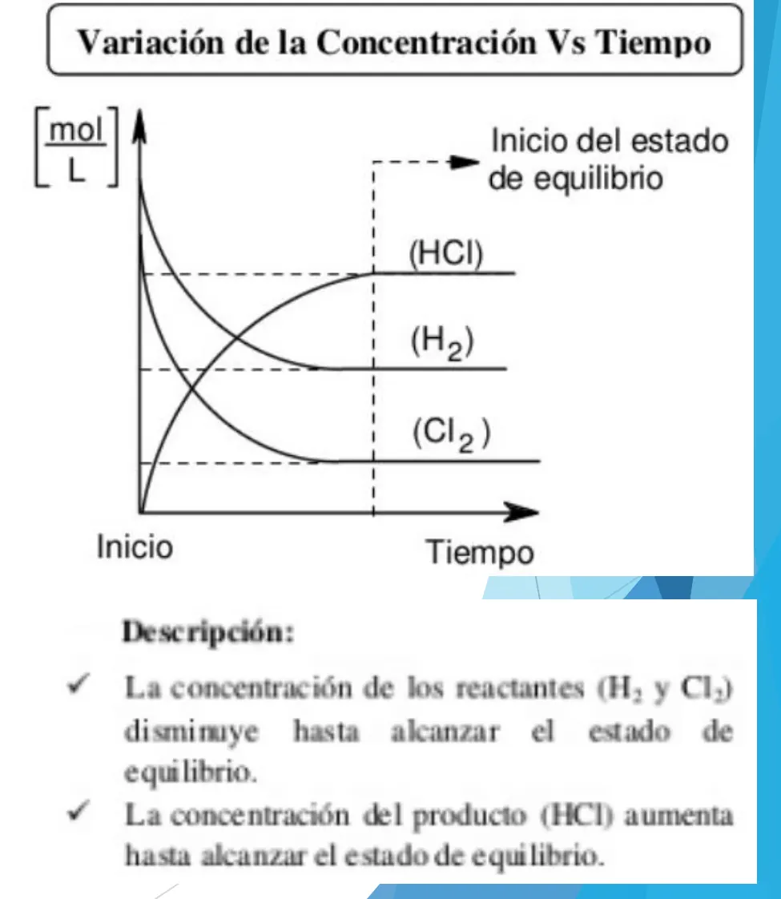

El Santo Resumen
Química
Ingeniería en Sistemas, UTN
De dónde sale
Resumen armado a partir del material del Drive de UTN (el examen más nuevo es el 2° parcial de octubre de 2025 y hay una referencia indirecta del final de diciembre de 2025). Si el programa cambió, manda la cátedra.
Los quiz, los ejercicios de examen y las figuras que se mueven están en la web.
Química
Química para Ingeniería en Sistemas
Qué le pasa a la materia cuando se transforma, y cómo calcular cuánto de cada cosa entra y sale.
Resumen no juzgado. Todavía nadie evaluó si alcanza para estudiar solo con esto.
Materia del pasado. Ya no está en el plan de estudios.
Con qué material está hecho esto
De 2023 en adelante el Drive trae solo dos cosas. Un 2° parcial del 22/10/2025 y una referencia de segunda mano del final del 17/12/2025. El resto de los exámenes es de 2021 y 2022, del plan viejo, y lleva su marca. No hay ningún 1° parcial nuevo.
Tampoco hay programa con fecha. Las unidades salen de los apuntes de teoría, que no dicen de qué año son.
La idea general
Toda la materia gira alrededor de una pregunta práctica. Si junto tanto de esto con tanto de aquello, ¿cuánto obtengo?
Para contestarla hacen falta tres pasos, y son el orden en que conviene estudiar:
- Saber escribir las sustancias. Si te dicen «hipoclorito de sodio» tenés que poder escribir su fórmula. Sin eso no podés plantear nada. Es la nomenclatura.
- Contar partículas pesando. No podemos contar moléculas, pero sí pesarlas. El mol es el puente entre los gramos y la cantidad de partículas.
- Hacer la cuenta de la reacción. Con la ecuación balanceada, cada problema es una cadena de reglas de tres. Es la estequiometría, y le suma pureza, rendimiento, gases y soluciones.
La teoría de estructura atómica y enlaces explica por qué las sustancias son como son. La de termoquímica, cinética y equilibrio explica si una reacción larga energía, qué tan rápido va y hasta dónde llega.
El recorrido
| Unidad del apunte | Tema | Dónde está acá |
|---|---|---|
| Práctica 1 y 2 | Nomenclatura y sales | 1° parcial |
| 1 | Sistemas materiales y estructura de la materia | 1° parcial |
| 2 | Notación y cantidad de sustancia | 1° parcial |
| 3 | Enlaces y fuerzas intermoleculares | 1° parcial |
| 4 | Termodinámica química | 1° parcial |
| 5 | Estados de agregación y gases | 1° parcial y 2° parcial |
| 6 | Soluciones | 2° parcial |
| 7 | Cinética química | 1° parcial |
| 8 | Equilibrio químico | 1° parcial |
| Sin apunte en el Drive | Redox y electroquímica | Qué se sabe |
Qué se evalúa y cómo
2° parcial. Es de problemas. El de 2025 trae tres, largos y con contexto de ingeniería, cada uno con incisos: una reacción de combustión con pureza y gases, una reacción entre soluciones y una celda electrolítica. Los cuatro archivos de 2021 y 2022 son más cortos pero piden lo mismo, salvo la electroquímica. Mirá cómo viene.
1° parcial. Solo hay exámenes de 2021 y 2022, con dos caras. En cuatro archivos de 2022, nomenclatura, balanceo y cuentas de masa y mol. En uno de 2022 y en el de 2021, teoría de todo el programa con algún cálculo. Mirá cómo viene.
Final. Hay una sola fuente, y no es la hoja del examen sino lo que contó un alumno de otra carrera. Mirá qué dice.
Por dónde empezar
Si tenés poco tiempo y te toca el 2° parcial, andá directo a estequiometría, gases y soluciones. Después hacé el parcial de 2025 con la guía de práctica al lado.
Las guías de la cátedra traen la respuesta impresa al lado de cada problema, así que sirven para corregirte: estequiometría y rendimiento, pureza, gases, soluciones y masa y mol.
También vas a necesitar la tabla periódica con los estados de oxidación más usados y las clases grabadas que recomienda el Drive.
Química
1° parcial
Nomenclatura, balanceo, masa y mol, y la teoría de estructura, enlaces, estados, energía, velocidad y equilibrio.
Resumen no juzgado. Todavía nadie evaluó si alcanza para estudiar solo con esto.
Materia del pasado. Ya no está en el plan de estudios.
Lo marcado «Plan viejo» es de 2022 o antes, del plan anterior. Puede no coincidir con lo que se toma hoy.
No hay parciales nuevos de esta instancia
Todos los 1° parciales del Drive son de 2021 y 2022, del plan viejo. Lo que sigue dice «se tomó» solo por esos. La nomenclatura y el mol siguen vigentes, porque el 2° parcial de 2025 los necesita para plantear todo. Del resto de la teoría no hay ninguna confirmación nueva: el apunte de teoría no tiene fecha. Preguntá en tu comisión qué entra.
Cómo viene el examen
Revisé seis archivos de esta instancia. Cinco son de 2022 y uno de 2021. Tienen dos caras bien distintas.
Cuatro archivos son cuestionarios del campus con el mismo molde. «Completar y balancear» una reacción de formación, arrastrando coeficientes, fórmulas y nombres, y después calcular la masa de sal o de agua que sale de una neutralización, o masa, moles, moléculas y átomos de una muestra. Los productos del balanceo son óxidos, hidróxidos, oxoácidos y sales.
Dos archivos preguntan otra cosa. Estructura de Lewis y tipo de enlace, propiedades de los líquidos, punto de ebullición de una solución, ubicación en la tabla periódica, leyes de los gases, cambios de estado y curva de calentamiento, catalizadores, solubilidad, y el de 2021 suma orbitales y una cuenta de estequiometría.
Nomenclatura
Fuente de toda la sección: apunte «Nomenclatura y Fórmulas Químicas» de la cátedra (2020), con su página en cada parte. Hay videos cortos de cada familia en el Drive: óxidos básicos, óxidos ácidos, óxidos neutros, hidróxidos, oxoácidos, sales y anfóteros.
El mapa de los compuestos

Fuente: apunte de Nomenclatura, página 27. Leelo así. Un metal con oxígeno da un óxido básico, y con agua, un hidróxido. Un no metal con oxígeno da un óxido ácido, y con agua, un oxácido. Un hidróxido y un ácido se neutralizan y dan sal más agua.
Las tres nomenclaturas
| Nomenclatura | Cómo nombra | Fe₂O₃ | Cl₂O₇ |
|---|---|---|---|
| Clásica o tradicional | Terminaciones según el número de oxidación | óxido férrico | óxido perclórico |
| Sistemática de Stock | Número de oxidación en romanos | óxido de hierro (III) | óxido de cloro (VII) |
| Sistemática funcional o de atomicidad | Prefijos mono, di, tri... | trióxido de dihierro | heptóxido de dicloro |
Las terminaciones de la clásica dependen de cuántos números de oxidación tiene el elemento (apunte, pág. 1):
| Si tiene | De menor a mayor |
|---|---|
| 1 | «óxido de» + nombre del elemento |
| 2 | ...oso, ...ico |
| 3 | hipo...oso, ...oso, ...ico |
| 4 | hipo...oso, ...oso, ...ico, per...ico |
Óxidos
Óxidos, definición
Son compuestos binarios formados por la combinación del oxígeno en su número de oxidación (-2), con otro elemento, que llamaremos «E», actuando con número de oxidación (n) positivo. Su fórmula general es E₂Oₙ. Si los subíndices son divisibles por 2, se simplifican.
Apunte de Nomenclatura, pág. 1
Si el oxígeno se combina con un metal, es un óxido básico. Si se combina con un no metal, un óxido ácido (apunte, pág. 3).
| Fórmula | Tipo | Stock | Funcional | Tradicional |
|---|---|---|---|---|
| CuO | Básico | óxido de cobre (II) | monóxido de cobre | óxido cúprico |
| Cl₂O₃ | Ácido | óxido de cloro (III) | trióxido de dicloro | óxido cloroso |
| Hg₂O | Básico | óxido de mercurio (I) | monóxido de dimercurio | óxido mercurioso |
| Na₂O | Básico | óxido de sodio | monóxido de disodio | óxido de sodio |
| Br₂O₇ | Ácido | óxido de bromo (VII) | heptóxido de dibromo | óxido perbrómico |
Fuente: apunte de Nomenclatura, pág. 4.
Nitrógeno, manganeso y cromo no siguen la regla
El apunte los trata aparte (pág. 4). Los nombrás con Stock o funcional. Por ejemplo, Mn₂O₃ es trióxido de dimanganeso y CrO₃ es trióxido de cromo.
Peróxidos (pág. 5). Oxígeno y metal, con el oxígeno en -1 formando el grupo O₂⁻². El subíndice 2 del oxígeno nunca se simplifica. H₂O₂ es peróxido de hidrógeno, Na₂O₂ peróxido de sodio.
Hidróxidos
Un catión metálico y tantos grupos OH⁻ como el número de oxidación del metal: Me(OH)ₓ. Se forman así (pág. 6):
óxido básico + agua → hidróxido
Por ejemplo, Al₂O₃ + 3 H₂O → 2 Al(OH)₃. Se nombran como el óxido, cambiando «óxido» por «hidróxido»: Fe(OH)₂ hidróxido ferroso, Fe(OH)₃ hidróxido férrico, Ni(OH)₂ hidróxido niqueloso. El hidróxido de amonio sale del amoníaco: NH₃ + H₂O → (NH₄)(OH) (pág. 7).
Hidruros e hidrácidos
| Compuesto | Qué es | Número de oxidación | Ejemplo |
|---|---|---|---|
| Hidruro no metálico | No metal + H. El no metal va con su menor número | H +1 | H₂S sulfuro de hidrógeno, HCl cloruro de hidrógeno |
| Hidruro metálico | Metal + H | H -1 | NaH hidruro de sodio, FeH₃ hidruro de hierro (III) |
| Hidrácido | Hidruro no metálico disuelto en agua (F, Cl, Br, I, S, Se, Te) | H +1 | HCl ácido clorhídrico, H₂S ácido sulfhídrico |
Con nombre especial: NH₃ amoníaco, PH₃ fosfina, AsH₃ arsina, BH₃ borano, SbH₃ estibina, CH₄ metano, SiH₄ silano. Fuente: apunte, págs. 8 a 10.
Oxoácidos
óxido ácido + agua → oxácido. Los pasos del apunte (pág. 11) son sumar agua, juntar los átomos y simplificar:
Br₂O₃ + H₂O → H₂Br₂O₄ → 2 HBrO₂
Hay una regla rápida para los monohidratados, con el número de oxidación del elemento (pág. 14):
| Si es | Hidrógenos | Oxígenos | Ejemplo |
|---|---|---|---|
| Impar | 1 | Cl +3 da HClO₂, ácido cloroso | |
| Par | 2 | S +6 da H₂SO₄, ácido sulfúrico |
| Número de oxidación | Ácido | Fórmula |
|---|---|---|
| +1 | hipobromoso | HBrO |
| +3 | bromoso | HBrO₂ |
| +5 | brómico | HBrO₃ |
| +7 | perbrómico | HBrO₄ |
Polihidratados (págs. 13 y 14). P, As y Sb aceptan 1, 2 o 3 aguas. Si, 1 o 2. B y Al, 1 o 3. El prefijo dice cuántas: meta con 1, piro con 2, orto con 3. «Orto» se puede omitir, y por eso H₃PO₄ es «ácido fosfórico».
| Reacción | Ácido |
|---|---|
| P₂O₅ + H₂O → 2 HPO₃ | metafosfórico |
| P₂O₅ + 2 H₂O → H₄P₂O₇ | pirofosfórico |
| P₂O₅ + 3 H₂O → 2 H₃PO₄ | ortofosfórico o fosfórico |
Anfóteros: cromo y manganeso
Son elementos que actúan como metal o como no metal según el número de oxidación (págs. 15 y 16).
| Reacción | Nombre |
|---|---|
| CrO + H₂O → Cr(OH)₂ | hidróxido cromoso |
| Cr₂O₃ + 3 H₂O → 2 Cr(OH)₃ | hidróxido crómico |
| Cr₂O₃ + H₂O → 2 HCrO₂ | ácido cromoso |
| CrO₃ + H₂O → H₂CrO₄ | ácido crómico |
| MnO + H₂O → Mn(OH)₂ | hidróxido manganoso |
| Mn₂O₃ + 3 H₂O → 2 Mn(OH)₃ | hidróxido mangánico |
| MnO₂ + H₂O → H₂MnO₃ | ácido manganoso |
| MnO₃ + H₂O → H₂MnO₄ | ácido mangánico |
| Mn₂O₇ + H₂O → 2 HMnO₄ | ácido permangánico |
Ojo con mangánico
«Mangánico» nombra al hidróxido de Mn +3 y también al ácido de Mn +6. El nombre solo no alcanza. Fijate si dice hidróxido o ácido.
Cómo sacar el número de oxidación
Sumás los números de oxidación de todos los elementos multiplicados por su subíndice, igualás a cero y despejás. El oxígeno va con -2 y el hidrógeno con +1 en estos compuestos (pág. 17).
H₂SO₄
, de donde . El azufre actúa con +6: es el ácido sulfúrico.
Apunte de Nomenclatura, pág. 17
Disociación
En agua, los ácidos pierden sus H y los hidróxidos sus OH. Lo que queda toma la carga correspondiente (pág. 18). H₂SO₄ da 2 H⁺ + (SO₄)⁻². Fe(OH)₃ da Fe⁺³ + 3 (OH)⁻. Te sirve para armar la sal.
Sales
La reacción es siempre la misma, y conviene tenerla automatizada.
Ácido + Hidróxido → Sal + agua
Para la fórmula, la carga del catión va como subíndice del anión y la carga del anión como subíndice del catión. El metal se escribe primero (págs. 18 y 19). Al balancear, empezá por el metal, seguí con el no metal y terminá con oxígeno e hidrógeno.
Ácido sulfúrico con hidróxido férrico
En forma iónica: 2 H⁺ (SO₄)⁻² + Fe⁺³ 3 (OH)⁻ da Fe₂(SO₄)₃. Balanceada: 3 H₂SO₄ + 2 Fe(OH)₃ → Fe₂(SO₄)₃ + 6 H₂O.
Apunte de Nomenclatura, pág. 19
Errata del apunte
En la página 20, para hidróxido de aluminio con ácido sulfúrico, la hoja imprime 2 Al(OH)₃ + 3 H₂SO₄ → Al₂(SO₄)₃ + 2 H₂O. Puse 6 H₂O porque el mismo párrafo dice que se forman seis moléculas de agua, y con 2 no cierra el balance de hidrógeno ni de oxígeno.
2 Al(OH)₃ + 3 H₂SO₄ → Al₂(SO₄)₃ + 6 H₂O
El nombre de la sal sale del ácido (pág. 21):
| El ácido termina en | La sal termina en | Ejemplo |
|---|---|---|
| -oso | -ito | HClO₂ da clorito: Al(ClO₂)₃ clorito de aluminio |
| -ico | -ato | H₂SO₄ da sulfato: Fe₂(SO₄)₃ sulfato férrico |
| -hídrico | -uro | HF da fluoruro: LiF fluoruro de litio |
Sales ácidas (págs. 23 y 24). No se neutralizan todos los H del ácido. Se nombra como la neutra, intercalando «ácido» o «diácido». NaHCO₃ es carbonato ácido de sodio o bicarbonato. Fe(HSO₄)₂ es sulfato ácido ferroso. K(H₂PO₄) es fosfato diácido de potasio. La práctica de sales las clasifica en oxisales y no oxigenadas (guía de sales).
Balancear
Todos traen varias reacciones de formación para completar y balancear. En el 20/04 también se pide la fórmula de una sal por su nombre y el nombre de un compuesto por su fórmula.
Solo se tocan los coeficientes, nunca los subíndices. Si cambiás un subíndice, cambiás la sustancia (apunte, pág. 3).
Óxido ferroso
Fe + O₂ → FeO. El oxígeno no cierra, así que multiplicás el óxido por 2: Fe + O₂ → 2 FeO. Ahora no cierra el hierro: 2 Fe + O₂ → 2 FeO.
Apunte de Nomenclatura, págs. 2 y 3
Son diatómicos H₂, O₂, N₂, F₂, Cl₂, Br₂ e I₂ (pág. 3). En una formación se escriben así.
Sistemas materiales
Fuente: apunte de teoría, Unidad 1.
- Materia: tiene masa, ocupa un lugar y es perceptible. Cuerpos: porciones limitadas de materia, con extensión, forma y volumen (pág. 2).
- Propiedades extensivas: dependen de la cantidad de materia (peso, volumen). Intensivas: no dependen de ella (punto de fusión, punto de ebullición, densidad) y sirven para identificar una sustancia pura (pág. 4).
- Sistema material: abierto, cerrado o aislado según su interacción con el medio (pág. 5).
- Homogéneo: iguales propiedades intensivas en todos sus puntos, una sola fase. Heterogéneo: más de una fase e interfase entre ellas (págs. 6 y 10).
- Fase: porción homogénea, separada de otras por interfases. Componente: cada sustancia que forma la fase (pág. 7).
- Lo homogéneo puede ser sustancia pura (simple o compuesta) o solución, que se fracciona en sus componentes (págs. 8 y 9).
- Dispersión: partículas de una sustancia interpuestas en otra. Es un sistema heterogéneo, con fase dispersante y fase dispersa (pág. 11).
Cambios de estado
Se pidió ubicar cada nombre en el esquema de sólido, líquido y gaseoso.

Fuente: apunte de teoría, Unidad 1, pág. 16.
| Cambio | De a | Dato del apunte |
|---|---|---|
| Fusión | Sólido a líquido | Por acción del calor |
| Solidificación | Líquido a sólido | Al bajar la temperatura |
| Vaporización | Líquido a gas | Dos formas: evaporación o ebullición |
| Licuefacción o condensación | Gas a líquido | Al quitar calor |
| Sublimación progresiva o volatilización | Sólido a gas | Naftalina, hielo seco |
| Sublimación regresiva o cristalización | Gas a sólido | Escarcha |
Evaporación: espontánea, invisible, desde la superficie y a cualquier temperatura. Ebullición: inducida, visible, desde el seno del líquido y a temperatura definida (Unidad 1, pág. 18).
Estructura atómica
Modelos atómicos
| Modelo | Idea |
|---|---|
| Demócrito | Átomos indivisibles y eternos |
| Dalton | Esferas sólidas e indivisibles. Los del mismo elemento son idénticos |
| Thomson | Masa positiva con partículas negativas distribuidas |
| Rutherford | Casi todo es espacio vacío. Núcleo positivo con casi toda la masa y electrones orbitando |
| Bohr | Electrones en capas circulares, estables, sin liberar energía. Absorben o emiten un fotón al cambiar de órbita |
| Actual | Mecánica cuántica. Orbitales, que son zonas donde es más probable hallar un electrón |
Fuente: Unidad 1, págs. 20 a 40 y cuadro de la pág. 46. Rutherford falla porque no explica la estabilidad del átomo ni el espectro discontinuo (pág. 30).
Partículas
Z, número atómico: protones, que en el átomo neutro son iguales a los electrones. A, número másico: protones más neutrones. Neutrones: A - Z. Isótopos: mismo Z, distinto A, es decir, distinta cantidad de neutrones (Unidad 1, págs. 35 a 37).
Números cuánticos
| Número | Valores | Qué indica |
|---|---|---|
| , principal | 1, 2, 3... | Nivel principal de energía |
| , secundario o azimutal | 0 hasta | Forma del orbital y subnivel (s, p, d, f) |
| , magnético | hasta , pasando por cero | Orientación del orbital y cuántos hay en el subnivel |
| spin | Dos sentidos de giro | Cada electrón del orbital gira al revés que el otro |
Fuente: Unidad 1, págs. 41 a 45. definen un orbital. Los cuatro definen un electrón (pág. 45).
Principio de exclusión de Pauli
Establece que en un átomo no puede haber dos electrones que tengan el mismo conjunto de números cuánticos. Cada orbital puede ser ocupado al máximo por dos electrones, pero según este principio deben tener spin diferente.
Apunte de teoría, Unidad 1, pág. 47
Regla de Hund
Establece que los electrones ocuparan orbitales individualmente hasta donde sea posible.
Apunte de teoría, Unidad 1, pág. 47
Tres electrones en 2p
El subnivel 2p tiene , así que vale -1, 0 y +1: tres orbitales. Por Hund, tres electrones van uno en cada orbital. Recién el cuarto comparte, y por Pauli con spin contrario.
Armado para este resumen

Fuente: Unidad 1, pág. 42. Cada raya es un orbital, y en cada orbital caben dos electrones.
Se pidió cuántos electrones caben en los orbitales s, p, d y f, y graficar el diagrama de Moeller. Con los números cuánticos y Pauli lo primero se deduce.
El diagrama de Moeller no está en el apunte
El parcial de 2021 lo pide, pero el apunte de teoría trae solo el diagrama de niveles de arriba. No lo dibujo de memoria. Buscalo en las clases grabadas o preguntá en tu comisión.
Tabla periódica
Los elementos van por Z creciente. Grupos (columnas): propiedades parecidas. Períodos (filas): las propiedades varían en forma periódica (Unidad 1, pág. 38).
Según dónde cae el electrón diferencial, el último que se agrega (págs. 48 a 50):
| Tipo | Electrón diferencial en |
|---|---|
| Representativos | s o p |
| De transición | d |
| De transición interna | f |
Radio atómico (págs. 52 y 53). Aumenta al bajar por un grupo, porque crece el tamaño del orbital. Disminuye de izquierda a derecha en un período, porque crece la carga nuclear y las capas se contraen.
Con una X marcada en un esquema de la tabla, se pidió número atómico, configuración electrónica, grupo, período y clasificación, con justificación.
Masa, mol y número de Avogadro
Fuente: apunte de teoría, Unidad 2, y guía de masa y mol.
Una docena son 12 cosas, sean huevos o autos. Un mol son cosas, sean átomos o moléculas. La ventaja es que pesa, en gramos, lo mismo que la masa relativa de la tabla.
El mol
En el SI, el mol es la cantidad de una sustancia que contiene tantas entidades elementales (átomos, moléculas u otras partículas) como átomos hay exactamente en 12 g del isótopo de carbono-12. El valor del número de Avogadro es: 6,02 × 10²³.
Apunte de teoría, Unidad 2, pág. 14
La guía y otras hojas del apunte usan 6,023 × 10²³.
| Concepto | Qué es | Ejemplo |
|---|---|---|
| uma | La doceava parte de la masa del átomo de carbono 12 | |
| Ar | Cuántas veces la masa del átomo supera la uma | Ar del N: 14 |
| Mr | Lo mismo para la molécula. Suma de Ar por su subíndice | NH₃: 14 + 3 · 1 = 17 |
| Masa molar | Masa en gramos de 1 mol. Numéricamente igual a Ar o Mr | Agua: 18 g, con 6,023 × 10²³ moléculas |
| Atomicidad | Cuántos átomos de cada clase tiene la molécula | O₂: 2, O₃: 3, gases nobles: 1 |
Fuente: Unidad 2, págs. 10 a 15.
Mr del ácido sulfúrico
Ar H: 1, Ar S: 32, Ar O: 16. Mr = 2 · 1 + 32 + 4 · 16 = 98.
Apunte de teoría, Unidad 2, pág. 12
Átomos totales
2 moles de moléculas de ácido sulfhídrico. Cada molécula de H₂S tiene 3 átomos. La guía da 3,6138 × 10²⁴ átomos, que es .
Guía de masa y mol, ejercicio 1 d
Moles de qué
La guía distingue siempre «moles de moléculas» de «moles de átomos». 1 mol de moléculas de N₂ tiene 2 moles de átomos. Si el enunciado pide átomos, multiplicá por la atomicidad.
Se pidió pasar de una unidad a otra, con compuestos dados por nombre. Hay que escribir la fórmula primero.
Leyes de la combinación
Ley de conservación de la masa (Lavoisier)
Establece que la masa en un sistema aislado no es creada ni destruida por reacciones químicas o transformaciones físicas. La masa de los productos en una reacción química debe ser igual a la masa de los reactivos.
Apunte de teoría, Unidad 2, pág. 6
Cerrar la masa
Con la reacción del apunte (Unidad 2, pág. 4), 2 Cl₂ + 3 O₂ → 2 Cl₂O₃, y Ar Cl 35,5 y Ar O 16. Reactivos: . Productos: . Cierra.
Armado para este resumen
Ley de las proporciones definidas (Proust)
Cuando dos o más elementos se combinan para formar un determinado compuesto, lo hacen siempre en una relación o proporción en masa constante, independientemente del proceso seguido para formarlo, cualquier exceso quedarán sin reaccionar.
Apunte de teoría, Unidad 2, pág. 8
Agua
En el agua, 2 g de hidrógeno van con 16 g de oxígeno. Si juntás 3 g de hidrógeno con 16 g de oxígeno, 1 g de hidrógeno queda sin reaccionar.
Armado para este resumen
Hipótesis de Avogadro
La materia está formada por pequeñas partículas móviles llamadas moléculas. Cada molécula está formada por uno o más átomos. Las moléculas de una misma sustancia simple están formadas por un número entero de átomos iguales, tienen igual masa e iguales propiedades químicas. Las moléculas de una sustancia compuesta están formadas, por lo menos, por dos clases distintas de átomos.
Apunte de teoría, Unidad 2, pág. 9
Transformaciones y tipos de reacción
Un cambio físico puede cambiar el estado, pero no la naturaleza. Uno químico varía la composición y forma sustancias nuevas (Unidad 2, pág. 2).
| Tipo | Forma | Ejemplo del apunte |
|---|---|---|
| Combinación o síntesis | A + B → AB | SO₃ + H₂O → H₂SO₄ |
| Descomposición | AB → A + B | CaCO₃ → CaO + CO₂ |
| Simple sustitución | A + BC → AB + C | Mg + 2 HCl → MgCl₂ + H₂ |
| Doble sustitución o metátesis | AB + CD → AC + BD | 2 AgNO₃ + 2 NaCl → 2 AgCl + 2 NaNO₃ |
Fuente: Unidad 2, págs. 4 y 5.
Enlaces químicos
Fuente: apunte de teoría, Unidad 3. Los enlaces explican cómo y por qué se unen los átomos. Formarlos libera energía, la energía de enlace, y romperlos cuesta esa misma energía (pág. 4).
Solo intervienen los electrones de valencia, los de mayor nivel de energía, que se representan con los símbolos de Lewis (pág. 5).
Teoría del octeto electrónico de Lewis
Establece que los átomos tienden a ganar o perder o compartan e⁻ adquiriendo la configuración electrónica del gas noble más cercano en la tabla periódica, es decir que tienen para llegar a tener 8 e en su nivel exterior, menos el H que completa con 2 e⁻.
Apunte de teoría, Unidad 3, pág. 6
Sal de mesa
El sodio pierde su electrón externo y queda con la configuración del neón. El cloro lo gana y queda con la del argón. Los dos terminan con 8 electrones en su último nivel.
Armado para este resumen
Tipos de enlace
| Enlace | Entre | Qué pasa | Propiedades |
|---|---|---|---|
| Iónico | Metal y no metal | Se transfieren electrones. Se forman catión (+) y anión (-) y se atraen | Redes cristalinas. Puntos de fusión y ebullición altos. Conducen disueltos en agua, no en sólido |
| Covalente | No metales | Se comparten pares: simple 1, doble 2, triple 3 | Bajo punto de fusión y ebullición en general. Mayormente no conducen. Solubles en solventes no polares |
| Covalente coordinado o dativo | No metales | El par lo aporta uno solo de los átomos | |
| Metálico | Átomos de metales | Cationes y electrones de valencia que se mueven libres | Conductividad alta, brillo, sólidos salvo el mercurio |
Fuente: Unidad 3, págs. 7 a 15 y 20 a 22.
Explique unión iónica y covalente1° parcial 2021 Plan viejo
Iónico: se da generalmente entre átomos metálicos, con tendencia a perder electrones, y no metálicos, con tendencia a ganar electrones, debido a la transferencia de electrones, quedando los dos transformados en iones. Es la fuerza de atracción electrostática que mantiene unidos a iones positivos y negativos.
Covalente: se da entre elementos no metales, donde comparten pares de electrones, adquiriendo cada uno la configuración del gas noble más próximo en la tabla periódica.
La consigna también pide graficar. Las estructuras de Lewis están en el apunte.
Fuente: apunte de teoría, Unidad 3, págs. 7, 8 y 12.
Electronegatividad y polaridad
La electronegatividad es la capacidad de un átomo en una molécula para atraer electrones hacia sí. El flúor es el más electronegativo (4,0) y el cesio el menos (0,7) (Unidad 3, pág. 16). Lo que importa es la diferencia:
| Diferencia de electronegatividad | Enlace |
|---|---|
| Menor o igual a 0,4 | Covalente no polar |
| De 0,5 a 1,7 | Covalente polar |
| Mayor a 1,7 | Iónico |
Fuente: Unidad 3, pág. 17.
Según la tabla del apunte
N-O: 3,5 - 3,0 = 0,5, polar. Na-Cl: 3,0 - 0,9 = 2,1, iónico. H-P: 2,1 - 2,1 = 0, no polar. As-O: 3,5 - 2,0 = 1,5, polar.
Apunte de teoría, Unidad 3, pág. 17
En un enlace no polar los átomos comparten por igual. En uno polar, el más electronegativo atrae más y aparecen cargas parciales δ+ y δ- (págs. 18 y 19).
Se pidió representar la estructura de Lewis de un óxido y decir qué enlace mantiene unidos sus átomos.
Entre moléculas
Las uniones entre moléculas son el puente de hidrógeno y las fuerzas de Van der Waals (pág. 3). El apunte desarrolla solo el primero. En el agua, el oxígeno concentra la carga negativa y los hidrógenos quedan con carga parcial positiva. El hidrógeno de una molécula atrae al oxígeno de la vecina, y eso explica sus propiedades anómalas (págs. 24 a 26).
Estados de agregación
Las leyes de los gases están en el 2° parcial. Acá va el resto de la Unidad 5.
| Estado | Volumen | Forma | Compresible |
|---|---|---|---|
| Gas | El del recipiente | La del recipiente | Muy |
| Líquido | Propio | La del recipiente | No |
| Sólido | Definido | Definida | Prácticamente no |
Fuente: Unidad 5, págs. 2, 22 y 30.
Líquidos
La presión de vapor es la presión de equilibrio entre el líquido y el vapor de una sustancia pura a una temperatura dada (Unidad 5, pág. 26). Depende del tipo de sustancia y de la temperatura, y aumenta con ella. Las sustancias volátiles tienen fuerzas intermoleculares débiles y presiones de vapor altas (págs. 27 y 28).
Punto de ebullición
El punto de ebullición de un líquido puro es la temperatura a la cual la presión de vapor del líquido es igual a la presión externa existente. La temperatura a la cual la presión de vapor de un líquido es igual a 1 atmósfera (760 mm Hg) se denomina punto de ebullición normal.
Apunte de teoría, Unidad 5, pág. 29
El apunte nombra también la tensión superficial, con un dibujo y sin definirla (pág. 22).
Sólidos
Cristalinos: partículas ordenadas y compactas, que vibran en torno a posiciones fijas. Amorfos: partículas acomodadas al azar, como el vidrio o los plásticos. El punto de fusión es la temperatura en la que el sólido pasa a líquido. Ocurre a temperatura constante y es una propiedad intensiva (Unidad 5, págs. 30 y 31).

Fuente: Unidad 5, pág. 32. En los tramos horizontales la sustancia cambia de estado y la temperatura no se mueve.
Con una curva y una tabla de puntos de fusión y ebullición, se pidió identificar la sustancia y en qué intervalos cambia de estado.
Termoquímica
Fuente: apunte de teoría, Unidad 4. No la vi tomada en ningún examen del Drive, pero está en el apunte.
La termoquímica estudia las transferencias de calor asociadas a las reacciones. El calor es energía en tránsito, y fluye hasta el equilibrio térmico (págs. 3 y 5).
Es decir, cantidad de calor igual a masa por calor específico por cambio de temperatura (pág. 7). El calor específico es lo que cuesta elevar un grado un gramo de sustancia.
Entalpía de reacción
La energía potencial interna que tiene almacenada un sistema, a presión constante, se denomina entalpía y se representa con la letra H. En una reacción A + B → C + D; ±Q, se obtiene , es decir . La diferencia se denomina entalpía de la reacción. Si p = cte, el calor de reacción es igual a la entalpía de la reacción, .
Apunte de teoría, Unidad 4, págs. 11 y 12
| Reacción | Calor | Signo de ΔH | Entalpías |
|---|---|---|---|
| Exotérmica | Desprende | ΔH < 0 | |
| Endotérmica | Absorbe | ΔH > 0 |
Dos Q distintas en el mismo apunte
La página 8 dice que Q > 0 significa que el sistema absorbe calor. Las páginas 9, 12 y 13 dicen exotérmica Q > 0 y endotérmica Q < 0. No es un error de cuenta. En , Q es lo que gana la sustancia. En , Q es lo que libera la reacción. Para no confundirte, razoná con el signo de ΔH, que no cambia.
En criollo
ΔH es el saldo de la reacción, como si fuera una cuenta bancaria de energía. Si queda negativo, la reacción perdió energía y la largó como calor. Prendés una hornalla y se calienta la cocina: exotérmica.

Fuente: Unidad 4, pág. 13.
Ley de Hess
Es otra manifestación de la ley de conservación de la energía que permite determinar, mediante simples sumas algebraicas, la entalpía de una reacción química. Cuando una reacción resulta difícil de estudiar con calorimetría, se recurre a otras reacciones que sí tengan sus entalpías determinadas. La sumatoria de ΔH₁, ΔH₂ y ΔH₃ será igual a ΔH.
Apunte de teoría, Unidad 4, págs. 14 a 16

Entalpía de formación del metano
Se quiere C (grafito) + 2 H₂ (g) → CH₄ (g), que no se puede medir directo. Se suman tres, con la c invertida para que el metano quede como producto, y por eso cambia de signo:
a) C (grafito) + O₂ (g) → CO₂ (g), ΔH = -393,5 kJ
b) 2 H₂ (g) + O₂ (g) → 2 H₂O (l), ΔH = -571,6 kJ
c) CO₂ (g) + 2 H₂O (l) → CH₄ (g) + 2 O₂ (g), ΔH = +890,4 kJ
Sumando: C (grafito) + 2 H₂ (g) → CH₄ (g), ΔH = -74,7 kJ.
Apunte de teoría, Unidad 4, págs. 17 y 18
El Drive no tiene el desarrollo de la ley de Lavoisier-Laplace que la Unidad 4 anuncia en su temario.
Cinética química
Fuente: apunte de teoría, Unidad 7. Estudia la velocidad de las reacciones, lo que influye en ella y su mecanismo (pág. 3). La velocidad de reacción es el cociente entre la variación de la concentración de un reactivo o producto y el intervalo de tiempo (pág. 4).
Teoría de las colisiones (págs. 6 y 7). Las partículas deben chocar de manera eficaz. Para eso, dos condiciones:
- Suficiente energía cinética para romper los enlaces.
- Orientación adecuada.
Complejo activado y energía de activación (págs. 8 a 10). Los choques eficaces forman un intermedio muy inestable, el complejo activado. La energía de activación es la energía adicional que deben absorber los reactivos para formarlo. Es una barrera que hay que salvar, aunque la reacción sea exotérmica.

Fuente: Unidad 7, pág. 9.
Es como una loma entre dos valles. Aunque el valle de llegada esté más abajo, primero hay que subir. Un catalizador abre un paso más bajo.
| Factor | Efecto | Página |
|---|---|---|
| Naturaleza, estado y división | En gas o disolución va más rápido. Zn en polvo más rápido que en virutas | 12 |
| Concentración | Al aumentar, hay más choques y más velocidad | 13 |
| Temperatura | Al aumentar, más moléculas superan la energía de activación | 13 |
| Catalizador | Baja la energía de activación. No se consume | 14 |
¿Por qué la presencia de un catalizador acelera la velocidad de una reacción química?1° parcial 21/04/2022 Plan viejo
Un catalizador es un agente que modifica la velocidad de una reacción química sin experimentar cambio al final de la misma. Acelera la velocidad de la reacción disminuyendo la energía de activación, sin modificar el producto y sin ser consumido. A los que disminuyen la velocidad se les llama catalizadores negativos o inhibidores.
Fuente: apunte de teoría, Unidad 7, pág. 14.
Se pidió explicar qué limita la velocidad de reacción y por qué. El 21/04/2022 también pidió el diagrama energético de un proceso exotérmico con y sin catalizador.
Equilibrio químico
Fuente: apunte de teoría, Unidad 8. No lo vi tomado en ningún examen del Drive.
Es un estado de las reacciones reversibles. Los reactivos se consumen en forma parcial y al final coexisten con los productos, porque las velocidades directa e inversa se igualaron (pág. 2).

Fuente: Unidad 8, pág. 3. Fijate que las curvas se aplanan. No se igualan entre sí. Se quedan quietas.
Ley de acción de masas (Guldberg-Waage)
La velocidad de una reacción química es proporcional al producto de las concentraciones molares de las sustancias reaccionantes, cada una elevada a una potencia igual al número de moléculas que aparecen en la ecuación equilibrada.
Apunte de teoría, Unidad 8, pág. 5
Constante de equilibrio
Para , con y . Cuando se alcanza el equilibrio, las velocidades de ambas reacciones son iguales. De donde:
Apunte de teoría, Unidad 8, págs. 5 y 6
Con la reacción del apunte
Para H₂ + Cl₂ ⇌ 2 HCl (Unidad 8, pág. 3), la constante es . Cada coeficiente queda de exponente.
Armado para este resumen
Principio de Le Châtelier
Si un sistema químico en equilibrio se somete a una perturbación que lo modifica, el sistema evolucionará hacia un nuevo estado de equilibrio contrarrestando el efecto de la perturbación.
Apunte de teoría, Unidad 8, pág. 7
Agregar reactivo
Al mismo sistema le agregás H₂. Evoluciona de manera de consumir ese exceso, o sea, hacia la formación de HCl.
Armado para este resumen
En criollo
El sistema es un porfiado. Hagas lo que hagas, reacciona en contra. Le sacás un producto, fabrica más. Lo calentás, va para el lado que absorbe calor.
| Cambio | Qué hace el sistema | ¿Cambia K? |
|---|---|---|
| Agregar reactivo o producto | Evoluciona de manera de consumir el exceso | No |
| Extraer reactivo o producto | Evoluciona de manera de producir esa especie | No |
| Presión o volumen, a T constante | Cambian las concentraciones | No |
| Temperatura | Depende de si es endotérmica o exotérmica | Sí |
Fuente: Unidad 8, págs. 7 a 9.
| Reacción | Si sube la temperatura | Si baja la temperatura |
|---|---|---|
| Endotérmica (ΔH > 0) | Hacia la derecha, K aumenta | Hacia la izquierda, K disminuye |
| Exotérmica (ΔH < 0) | Hacia la izquierda, K disminuye | Hacia la derecha, K aumenta |
Errata del apunte
En la Unidad 8, página 9, la fila de la endotérmica imprime «hacia la derecha (disminución de K)» y «hacia la izquierda (aumento de K)». Puse lo contrario. Si el equilibrio va a la derecha aumentan los productos, y con la fórmula de la página 6 K tiene que aumentar. Además la misma hoja, para la exotérmica, asocia izquierda con disminución de K.
El apunte se contradice en la presión
La página 6 dice que Ke «varía con la temperatura y la presión». Las páginas 7 y 8 dicen que la presión no modifica su valor. Acá va lo de las páginas 7 y 8, que es lo que desarrolla el apunte. Si te lo toman, preguntá.
Lo que se tomó y el Drive no explica
Solo en el plan viejo
El 1° parcial del 21/04/2022 preguntó dos cosas que no están en ningún apunte del Drive. Una propiedad de los líquidos, con opciones como viscosidad y capilaridad, y el pH de una solución de ácido clorhídrico. Si te entran, están en las clases grabadas o los tiene tu comisión. No las explico de memoria.
Química
2° parcial
Problemas: estequiometría con reactivo limitante, pureza y rendimiento, gases y soluciones, y lo que se sabe de electroquímica.
Resumen no juzgado. Todavía nadie evaluó si alcanza para estudiar solo con esto.
Materia del pasado. Ya no está en el plan de estudios.
Lo marcado «Plan viejo» es de 2022 o antes, del plan anterior. Puede no coincidir con lo que se toma hoy.
Cómo viene el examen
Revisé cinco archivos. Uno es de 2025, del plan nuevo. Los otros cuatro son de 2021 y 2022, del plan viejo.
Cada uno tiene incisos encadenados y empieza con un párrafo de contexto.
- Una combustión, con un reactivo gaseoso impuro medido en CNPT. Pide volumen de un producto a otra presión y temperatura, ese volumen a otra temperatura, y moléculas de otro producto.
- Dos soluciones que reaccionan, una en % P/P con densidad y otra en molaridad. Pide reactivo en exceso y cuánto, masa de sal y concentración final en % p/v, y comparar con un valor comercial.
- Una celda electrolítica con rendimiento. Pide semirreacciones, si se llega a una masa diaria con dos sales posibles, y cuál conviene por costo. Mirá qué se sabe.
La hoja dice «Química General», no «Química ISI». Puede ser un parcial común a varias carreras.
Los cuatro piden reactivo en exceso o limitante, masa o moles de un producto, volumen de gas con , soluciones y pureza. Tres incluyen rendimiento. El de 2021 es de opción múltiple en el campus. El recuperatorio de 2022 trae puntaje: 3, 1, 2, 2 y 2.
El problema 1 de 2025 tiene el mismo esquema que el ejercicio 14 de la guía de soluciones, y el 2 se parece al 31. La guía trae la respuesta impresa, así que podés practicar ahí y corregirte.
El método de la estequiometría
Fuente: guía de estequiometría y las diapositivas de resolución de las guías, en Material de Cursado. Los pasos de abajo son los que usan esas diapositivas.
Una ecuación igualada expresa las relaciones cuantitativas entre las sustancias. Conociendo la ecuación y las masas atómicas se pueden hacer todos los cálculos (guía, pág. 1).
- Escribí las fórmulas a partir de los nombres. Mirá la nomenclatura.
- Balanceá la ecuación.
- Debajo de cada sustancia, poné moles y gramos, con la masa molar por el coeficiente. Comprobá que reactivos y productos sumen lo mismo.
- Pasá lo impuro a puro, si hay impurezas.
- Buscá el reactivo limitante, si te dan cantidades de dos reactivos.
- Hacé regla de tres desde el limitante hasta lo que te piden.
- Aplicá el rendimiento, si te lo dan.
- Pasá a la unidad pedida: volumen con gases, moléculas con Avogadro.
Para pasar de una sustancia a otra usás siempre la ecuación balanceada. Las masas solas no alcanzan, porque mandan los coeficientes.
Reactivo limitante
Hay que decir cuál está en exceso y en qué cantidad, y hacer el resto con el limitante. En el del 16/06 se pide además cuánto sobra en moles.
En criollo
Tenés 10 panes y 3 fetas de jamón para armar sándwiches de 2 panes y 1 feta. Sale 3 sándwiches y sobran 4 panes. El jamón es el limitante. No importa de cuál hay menos. Importa cuánto pide la receta de cada uno.
Ácido nitroso con hidróxido de calcio
Reaccionan 50 g de ácido nitroso con 30 g de hidróxido de calcio.
2 HNO₂ + Ca(OH)₂ → Ca(NO₂)₂ + 2 H₂O, con 94 g + 74 g → 132 g + 36 g.
Cuánto hidróxido pide el ácido:
Hay solo 30 g, así que se acaba antes. El limitante es Ca(OH)₂. El exceso es HNO₂:
Sobran g. La sal sale del limitante:
La guía imprime 53,51 g y 11,89 g de exceso.
Guía de estequiometría, ejercicio 7, y su resolución en Material de Cursado, págs. 2 y 3
Lo que se calcula después
Una vez que encontraste el limitante, todo lo demás sale de él. El exceso no se usa para calcular productos. La referencia del final de 2025 también lo remarca.
Rendimiento
La reacción real da menos que lo teórico. El rendimiento compara lo obtenido con lo que daría al 100 %.
Cinc con ácido clorhídrico
10 g de cinc dan 18 g de cloruro de cinc. Zn + 2 HCl → ZnCl₂ + H₂, con Zn 65 y ZnCl₂ 136.
Lo que daría al 100 %:
El rendimiento:
La masa real de hidrógeno: al 100 % saldrían 0,31 g, y al 86 % salen 0,266 g. La guía, con masas atómicas más finas, imprime 86,29 % y 0,264 g.
Guía de estequiometría, ejercicio 9, y su resolución en Material de Cursado, págs. 6 y 7
Dos sentidos
Si el enunciado da el rendimiento y pide producto, multiplicás lo teórico por el rendimiento. Obtenés menos. Si pide cuánto reactivo usar para llegar a una cantidad real, tenés que partir de más.
Pureza
Una muestra impura tiene una parte que reacciona y otra que no. Solo la parte pura entra en la ecuación. Un 10 % de impurezas es un 90 % de pureza.
Carbonato de calcio impuro
300 g de CaCO₃ con 10 % de impurezas con HCl en exceso. ¿Qué volumen de CO₂ en CNPT?
CaCO₃ + 2 HCl → CaCl₂ + H₂O + CO₂, con 100 g de carbonato que dan 1 mol de CO₂.
La guía imprime 60,48 litros.
Guía de pureza, ejercicio 2, y su resolución en Material de Cursado, pág. 3
La guía de pureza también pide lo inverso: desde el producto obtenido, calcular la pureza.
Gases
Fuente: apunte de teoría, Unidad 5, y guía de gases.
Un gas no tiene forma ni volumen propios y es muy compresible. Sus partículas se mueven al azar, en línea recta y con choques perfectamente elásticos. Se desprecian las atracciones entre ellas, y su energía cinética promedio varía de manera proporcional con la temperatura (Unidad 5, págs. 2 a 5).
Cuatro variables describen un gas: P, V, T y n (pág. 6).
Temperatura siempre en Kelvin
(Unidad 5, pág. 8). En una ley de gases, los grados Celsius dan cualquier cosa.
Presión: 1,00 atm = 760 mm Hg = 760 torr = 1,01 × 10⁵ Pa (pág. 6). CNPT: 1 atm y 273 K, donde 1 mol de gas ocupa 22,4 L (pág. 17).
Ley de Boyle Mariotte
A temperatura constante, el volumen de una masa definida de gas es inversamente proporcional a la presión que soporta.
Apunte de teoría, Unidad 5, pág. 9
Globo sonda
155 L a 1 atm suben a 0,38 atm, con temperatura constante. , entonces y L.
Apunte de teoría, Unidad 5, pág. 10
Ley de Charles
El volumen de una cantidad fija de gas mantenida a presión constante es directamente proporcional a su temperatura absoluta.
Apunte de teoría, Unidad 5, pág. 11
Expansión a presión constante
1,5 L a 308 K. ¿A qué temperatura llega a 2,6 L? , entonces y K.
Apunte de teoría, Unidad 5, pág. 12
Ley de Gay-Lussac
La presión de una cantidad fija de gas mantenida a volumen constante es directamente proporcional a su temperatura absoluta.
Apunte de teoría, Unidad 5, pág. 13
Pistón a volumen fijo
Gas a 1 atm, de 293 K a 390 K con volumen fijo. , entonces y atm.
Apunte de teoría, Unidad 5, pág. 14
Ecuación de estado de los gases ideales
Y si consideramos que en CNPT las funciones de estado son , y , la Ecuación de Estado se escribe:
Apunte de teoría, Unidad 5, pág. 15
Pasar a condiciones normales
Un gas a 30 °C y 680 mmHg ocupa 50 L. En condiciones normales, 760 mmHg y 273 K:
Apunte de teoría, Unidad 5, pág. 16
Ley de Avogadro
El volumen de un gas mantenido a temperatura y presión constantes es directamente proporcional al número de moles del gas, es decir a la cantidad de gas que hay.
Apunte de teoría, Unidad 5, pág. 17
Sale la constante R
1 mol a 273 K y 1 atm ocupa 22,4 L. Entonces atm·L/(K·mol).
Apunte de teoría, Unidad 5, págs. 17 y 18
Ecuación general de los gases ideales
Esta relación da lugar a la llamada ecuación general de los gases ideales en función de la cantidad de sustancia: , con atm·L/(K·mol), constante universal de los gases.
Apunte de teoría, Unidad 5, pág. 18
Globo de helio
Un globo de 18,0 cm de radio, a 20 °C y 1 atm. L y K, entonces moles. Multiplicando por la masa molar, g de helio.
Apunte de teoría, Unidad 5, págs. 18 y 19
Sirve para chequear un resultado. En el examen va el desarrollo que pide la cátedra.
Densidad de un gas (Unidad 5, pág. 20). Reordenando la ecuación general, . En el ejemplo del apunte, helio a 1 atm y 273 K da 0,18 g/L, y a 60 °C baja a 0,146 g/L.
Ley de Dalton de las presiones parciales
Establece que la presión total de una mezcla de gases es la suma de la presión parcial de sus componentes, , donde la presión parcial de cada gas es la presión que el gas ejercería si fuera el único gas en el recipiente.
Apunte de teoría, Unidad 5, pág. 21
Mezcla en un recipiente
1 L de H₂ a 2 atm, 5 L de N₂ a 4 atm y 2 L de He a 2 atm pasan a un recipiente de 20 L, a la misma temperatura. Cada gas se calcula con Boyle, como si estuviera solo: atm, atm y atm. La total es 1,3 atm. La guía imprime esos valores.
Guía de gases, ejercicio 9
Gases dentro de una reacción
Lo pidieron en todos los 2° parciales que revisé. Primero sacás moles por estequiometría. Después usás con las condiciones que te piden. Si el gas está en CNPT, sale directo con 22,4 L.
Hidrógeno a 27 °C y 2 atm
4 g de cinc con ácido clorhídrico en exceso. Zn + 2 HCl → ZnCl₂ + H₂.
La guía imprime 0,753 litros.
Guía de gases, ejercicio 10, y su resolución en Material de Cursado, pág. 20
Soluciones
Fuente: apunte de teoría, Unidad 6, y guía de soluciones.
Una solución es una mezcla homogénea de dos o más sustancias, perfectamente miscibles. Soluto: la que está en menor proporción o cambia su estado de agregación. Solvente: la que está en mayor proporción o mantiene su estado (Unidad 6, pág. 2). Según el estado hay sólidas, líquidas y gaseosas (págs. 4 a 6). Según el soluto, moleculares, que no conducen, e iónicas, que sí (págs. 7 y 8).

Fuente: Unidad 6, pág. 15.
Unidades de concentración
| Unidad | Significa | Fórmula |
|---|---|---|
| % m/m o % P/P | Gramos de soluto en 100 g de solución | |
| % m/V o % P/V | Gramos de soluto en 100 ml de solución | |
| % V/V | ml de soluto en 100 ml de solución | |
| % P/Psv | Gramos de soluto en 100 g de solvente | |
| Molaridad, M | Moles de soluto por litro de solución | |
| Molalidad, m | Moles de soluto por kg de solvente | |
| Normalidad, N | Equivalentes gramo por litro de solución | |
| Fracción molar, x | Moles del componente sobre moles totales |
Fuente: Unidad 6, págs. 16 a 30, y guía de soluciones, pág. 1.
Solución o solvente
% P/P y molaridad son por solución. Molalidad y % P/Psv son por solvente. Solución es soluto más solvente. Es la confusión típica.
La densidad aparece cuando el dato viene en % P/P pero el volumen es lo que tenés. Para pasar: % m/V = % m/m × densidad de la solución.
Densidad y concentración
% m/V = % m/m x densidad de la solución.
Apunte de teoría, Unidad 6, págs. 20 y 26
De % P/P a % p/v
8 g de soluto y 250 g de agua, con densidad 1,08 g/mL. . Y .
Apunte de teoría, Unidad 6, pág. 21
Molaridad con densidad
NaOH al 20 % m/m, densidad 0,9 g/ml, masa molar 40 g/mol. mol/l.
Apunte de teoría, Unidad 6, pág. 26
Molaridad directa
73 g de HCl en 500 ml de solución, con masa molar 36,5 g/mol. M.
Apunte de teoría, Unidad 6, pág. 23
Sirve para chequear un resultado. En el examen va el desarrollo que pide la cátedra.
Normalidad (Unidad 6, págs. 27 a 29). es la cantidad de H sustituibles en un ácido, de OH en una base, o la carga neta del catión en una sal. Para Al(OH)₃ 2 M, y da 6 N. Para H₂SO₄ 1 M, y da 2 N.
Se pidió cuánto soluto hay en una masa de disolución de molalidad dada. Ojo, la masa es de solución y la molalidad va por kg de solvente.
Preparar, diluir y mezclar
Preparar desde un ácido comercial
HCl comercial al 36 % P/P con densidad 1,2 g/cm³. Se quieren 500 ml 0,1 M.
Moles que hacen falta: , entonces , y con son g.
Concentración del comercial: . Entonces y ml. La guía imprime 4,225 ml.
Guía de soluciones, ejercicio 10, y su resolución en Material de Cursado, págs. 16 y 17
Mezclar dos soluciones
800 ml al 3 % P/V más 200 ml al 10 % P/V, con volúmenes aditivos. Soluto total: g en ml. Queda 4,4 % P/V, como imprime la guía.
Guía de soluciones, ejercicio 9
Diluir con agua no cambia la masa de soluto. Cambia el volumen de solución. El recuperatorio del 29/06/2022 pidió una dilución.
Soluciones que reaccionan
Es el caso que combina todo. Pasá cada solución a gramos o moles de soluto puro, y recién ahí buscá el limitante.
Hidróxido de potasio con ácido hipocloroso
100 cm³ de KOH 4 % P/V con 500 cm³ de HClO 0,01 M. KOH + HClO → KClO + H₂O, con KOH 56, HClO 52,5 y KClO 90,5.
KOH: 4 g en 100 ml, o sea 4 g.
HClO: , entonces mol en 500 ml, que son 0,2625 g.
Lo que pide el ácido: , entonces g de KOH. El exceso es KOH en 3,72 g.
Sal: , entonces g. La guía imprime 0,453 g y 3,72 g.
Guía de soluciones, ejercicio 31, y su resolución en Material de Cursado, págs. 45 y 46
Solubilidad
La solubilidad es la máxima cantidad de soluto que puede disolverse en una cantidad dada de solvente, a presión y temperatura determinadas (Unidad 6, pág. 9). En sólidos en líquidos depende de la naturaleza de ambos y de la temperatura. En general aumenta con ella, y la presión influye muy poco.
| Solución | Contiene |
|---|---|
| Diluida | Poco soluto respecto del solvente |
| Concentrada | Más soluto, sin llegar al límite |
| Saturada | La máxima cantidad posible. Soluto puro y solución en equilibrio dinámico |
| Sobresaturada | Más de lo que se disuelve normalmente. Una perturbación la lleva a saturada |
Fuente: Unidad 6, págs. 10 a 12.
Con una curva de gramos de soluto cada 100 g de agua contra temperatura, se preguntó qué pasa al agregar cierta masa a una temperatura dada. Se resuelve leyendo la curva y comparando con lo que se agrega.
Los gases en líquidos se comportan al revés con la temperatura. Al subirla, baja la solubilidad (pág. 31).
Ley de Henry
La cantidad de gas disuelta en un líquido es directamente proporcional a la presión parcial que ejerce ese gas sobre el líquido.
Apunte de teoría, Unidad 6, pág. 32
Propiedades coligativas
Son las propiedades de las soluciones diluidas que dependen del número de partículas de soluto disueltas, no de su naturaleza. Son cuatro: disminución de la presión de vapor, aumento del punto de ebullición, disminución del punto de congelación y presión osmótica (Unidad 6, pág. 33).
Ley de Raoult
Establece la relación entre la presión de vapor de un componente puro y su presión en la disolución. Raoult encontró que cuando se agregaba soluto no volátil a un disolvente puro disminuía la presión de vapor del disolvente.
Apunte de teoría, Unidad 6, pág. 34
Aumento del punto de ebullición
, con , donde m es la concentración molal de la solución y la constante molal de ebullición.
Apunte de teoría, Unidad 6, pág. 37
Disminución del punto de congelación
, con , donde m es la concentración molal de la solución y la constante molal de congelación.
Apunte de teoría, Unidad 6, pág. 38
Azúcar en agua
85 g de sacarosa (342 g/mol) en 392 g de agua. Molalidad: m.
Con °C·kg/mol: °C, y hierve a 100,329 °C.
Con °C·kg/mol: °C, y congela a -1,179 °C.
Apunte de teoría, Unidad 6, págs. 40 a 42

Fuente: Unidad 6, pág. 37. El soluto baja la presión de vapor. Por eso hay que calentar más para llegar a la presión externa.
Sirve para chequear un resultado. En el examen va el desarrollo que pide la cátedra.
Se pidió calcular el punto de ebullición de una solución de sacarosa, dando otra constante. Usá la que dé el enunciado.
Ósmosis (Unidad 6, págs. 43 y 44). Es el flujo de solvente desde una solución diluida hacia una más concentrada a través de una membrana semipermeable, que deja pasar solvente y no solutos. La presión osmótica es igual a la presión hidrostática de la columna de fluido en equilibrio.
Electroquímica
En el único 2° parcial nuevo del Drive, es uno de los tres problemas. Pide semirreacciones, masa que se obtiene en una celda con corriente, tiempo y rendimiento, y comparar el costo de dos sales. La referencia del final dice que a los de Sistemas les tomaron redox con el método ión-electrón y un ejercicio de leyes de Faraday para calcular la masa depositada.
El Drive no tiene teoría de este tema
Ningún apunte de teoría, guía ni resumen del Drive explica redox, ion-electrón, celdas ni leyes de Faraday. Tampoco está en las 8 unidades. Por eso acá no hay fórmula ni procedimiento. No puedo respaldarlos con el material de la cátedra, y una regla general dicha de memoria puede no ser como la pide la cátedra.
Hacelo así:
- Mirá las clases grabadas.
- Pedile a tu comisión la teoría o la guía de electroquímica.
- Practicá con el problema 3 del parcial de 2025.
Lo que sí podés traer preparado es la nomenclatura de las sales, el rendimiento y el cálculo de número de oxidación.
Química
Final
Lo poco que se sabe del final, y la teoría que hace falta para cada tema que nombra.
Resumen no juzgado. Todavía nadie evaluó si alcanza para estudiar solo con esto.
Materia del pasado. Ya no está en el plan de estudios.
Hay una sola fuente, y es indirecta
En el Drive no hay ninguna hoja de final. Hay un documento del 17/12/2025 que junta lo que contó un alumno de Mecánica que lo rindió. No trae enunciados ni números, solo temas, y dice que el examen varía según la carrera. Tomalo como una pista, no como un temario. Preguntá en tu comisión cómo es el final y qué entra.
Qué dice la referencia
Relación entre moles, moléculas y átomos, con la atomicidad. Reactivo limitante y en exceso. aplicada después de sacar moles o masa con el limitante.
Ejercicios de % m/m y % m/V. Por ejemplo, dada una solución de un ácido o una sal, cuántos gramos de soluto hay.
Dice que a los de Sistemas les tomaron redox, y a los de Mecánica no. Balancear por el método ión-electrón y calcular la masa depositada o liberada con leyes de Faraday.
Es lo mismo que pide el 2° parcial de 2025. Con ese parcial estudiado llegás bien a lo que la referencia nombra, salvo lo que el Drive no explica.
Moles, moléculas y átomos
La explicación completa está en masa, mol y número de Avogadro.
| De | A | Cómo |
|---|---|---|
| Gramos | Moles | Dividís por la masa molar |
| Moles | Moléculas | Multiplicás por |
| Moléculas | Átomos | Multiplicás por los átomos de cada molécula |
| Moles de gas en CNPT | Litros | Multiplicás por 22,4 |
Fuente: apunte de teoría, Unidad 2, págs. 10, 14 y 15, y Unidad 5, pág. 17.
Reactivo limitante y gases
Primero la ecuación balanceada. Después, cuánto de un reactivo pide el otro. El que no alcanza es el limitante, y con él se calcula todo.
Mirá el ejemplo del ácido nitroso, y cómo se conecta con gases dentro de una reacción. Para el gas:
Fuente: apunte de teoría, Unidad 5, págs. 17 y 18. La temperatura va en Kelvin.
Soluciones
% m/m es gramos de soluto en 100 g de solución. % m/V es gramos de soluto en 100 ml de solución. Se pasa de una a otra con la densidad: % m/V = % m/m × densidad (apunte de teoría, Unidad 6, págs. 16 a 20). El resto está en soluciones.
Un consejo de la referencia que no conviene seguir a ciegas
El documento sugiere dividir los gramos de soluto por cien y multiplicarlos por los gramos totales de la solución, y aclara que depende de cómo se plantee. Eso está escrito de forma confusa, porque el que se divide por 100 es el porcentaje. Quedate con la definición del apunte: gramos de soluto cada 100 de solución.
Redox y electroquímica
El Drive no tiene teoría de esto. Mirá qué hacer.
El resto del programa
La referencia no nombra termoquímica, cinética, equilibrio, estructura ni enlaces, pero habla de lo que preguntaron a una sola persona. Lo tenés en el 1° parcial.